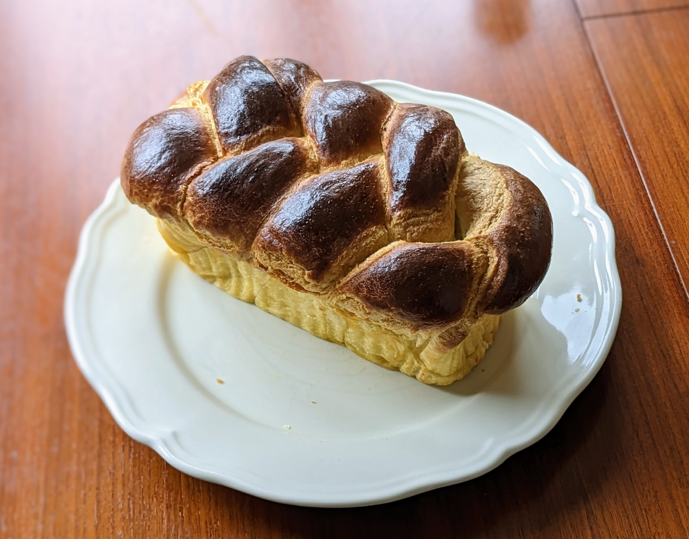

Brioche tressée

Pour deux belles brioches (c'est beaucoup !) :
- 500g de farine
- 400g de beurre
- 300g d'œufs, soit environ 5 œufs, mais c'est important de les peser
- 23g de levure boulangère fraîche (au rayon frais de ton supermarché, ou bien en demandant à ta boulangerie)
- 60g de sucre
- 11g de sel
- Un peu de lait et d'œuf en plus, en quantités égales
- Battre les œufs vite fait. Les mettre dans un bol de robot, ajouter la levure, le sucre, puis la farine et le sel, et utiliser le crochet du robot pour pétrir le tout à vitesse moyenne.
- Lorsque la pâte commence à se décoller de la paroi, ajouter le beurre coupé en gros cubes, et continuer à pétrir ; au bout de quelques minutes, aller racler le bol pour incorporer d'éventuels bouts de pâte ou de farine collés sur la paroi.
- Pétrir environ une demie-heure. La pâte est prête quand elle cesse de coller, qu'elle claque sur les bords du bol, et qu'on peut la prendre en entier avec le crochet. À ce stade-là, elle brille, et on peut l'étirer avec les mains et voir au travers.
- La laisser dans le bol dans une pièce chaude (genre la salle de bains après une douche, température idéale : 30°C) pendant environ une heure pour qu'elle grossisse. (On appelle cette étape le "pointage".)
- Réserver la pâte au frais dans du film plastique jusqu'à ce qu'elle soit ferme ; minimum une heure, on peut aussi la laisser toute la nuit.
- Étaler la pâte sur un plan de travail, et la couper en trois bandes de poids à peu près identique. Rouler chaque bande pour former un long boudin. Durant ces deux étapes, on doit fariner un peu le plan de travail, mais c'est important d'avoir la main légère sur la farine, sinon c'est dur de former des beaux boudins.
- Presser ensemble les trois boudins à une extrémité, et former une tresse raisonnablement serrée. Quand on arrive au bout, souder les extrémités sur le dessous, et mettre le tout dans un moule rectangulaire (si tu as beaucoup de pâte, coupe la tresse en deux et utilise deux moules).
- Faire bouillir un litre d'eau, et le mettre dans un bol au fond du four, puis mettre la tresse dans le four éteint; laisser 45-60 minutes, jusqu'à ce que ça ait bien grossi. (On dit qu'on "fait pousser" la pâte.)
- Mélanger du lait et de l'œuf en quantités égales. Sortir la pâte du four, et faire préchauffer le four à 170°C.
- Badigeonner la pâte du mélange lait/œuf, et enfourner environ 25 minutes.
Remarque : cette recette part du principe que tu as un robot, genre KitchenAid. Si tu n'en as pas, mais que tu as des très gros muscles dans les bras, tu peux t'amuser à pétrir la pâte à la main. Compte dans ce cas environ une heure et demie de pétrissage.
Remarque 2 : au début de la recette, c'est important que le sel n'entre jamais en contact direct avec la levure, sinon ça tue la levure, ce qui donne un mauvais goût et empêche la pâte de bien monter.
Retour à la liste des recettes